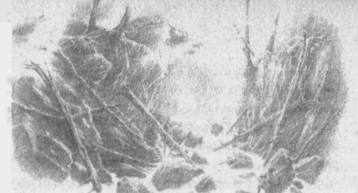

17
Sonunda, gece çökerken, Turambar ve yoldaşları Cabed-en-Aras’a geldiler ve suyun gürültüsüne memnun oldular; çünkü aşağıda tehlike vaat etse de, tüm diğer sesleri perdeliyordu. Sonra Dorlas onları biraz kenara, güneye doğru götürdü ve bir yarıktan uçurumun dibine indiler; ama orada Dorlas’m cesareti kırıldı, çünkü ırmakta pek çok taş ve kaya vardı ve su çevrelerinde çılgınca çalkalanıyor, dişlerini gıcırdatıyordu. “Ölmenin kesin bir yolu bu,” dedi Dorlas.
“Ölüme de gitse yaşama da, tek yol bu,” dedi Turambar, “hem, gecikmek yolu daha umut verici göstermeyecek. Bu yüzden, beni izleyin!” Önden o gitti ve beceri, cesaret ya da talih eseri, karşıya geçti ve koyu karanlıkta, arkasından kimin geldiğini görmek için döndü. Arkasında karanlık bir şekil duruyordu. “Dorlas?” dedi.
“Hayır, benim,” dedi Hunthor. “Dorlas geçmekte başarısız oldu, sanırım. Çünkü bir erkek savaşı sevebilir, ama pek çok başka şeyden korkabilir. Tahminim, kıyıda oturmuş, titriyordur; akrabalarıma söylediği sözler yüzünden utanca boğulur umarım.”
Turambar ile Hunthor bir süre dinlendiler, ama biraz sonra gece havası onları üşüttü, çünkü ikisi de sırılsıklam olmuştu ve ırmak boyunca, kuzeye, Glaurung’un kaldığı yere doğru bir yol aramaya başladılar. Orada uçurum daralıyor, kararıyordu ve el yordamıyla ilerlerken, yukarıda, közlenmiş ateşten gelirmiş gibi duran bir ışıltı gördüler ve ihtiyatlı uykusunda hırlayan Büyük Solucan’ı duydular. Sonra yoklaya yoklaya tırmanıp, kenarın hemen altına vardılar; çünkü düşmanın gardının altına girmek için tek umutları buydu. Ama artık koku o kadar kötüydü ki, başları dönmeye başlamıştı ve tırmanırken ayakları kayıyor, ağaç köklerine tutunuyorlardı ve sefaletleri içinde, Teiglin’in dişlerine düşme dehşeti dışında her şeyi unutup öğürüyorlardı.
Sonra Turambar Hunthor’a şöyle dedi: “Gittikçe azalan gücümüzü boşa harcıyoruz. Çünkü, ejderhanın nereden geçeceğinden emin olmadan tırmanmak nafile.”
“Ama öğrendiğimiz zaman,” dedi Hunthor, “uçurumdan tırmanmak için bir yol aramaya zamanımız olmayacak.”
“Doğru,” dedi Turambar. “Ama her şey tesadüfe bağlıyken, tesadüfe güvenmemiz gerekecek.” Bu yüzden durup beklediler ve karanlık çukurdan çok yükseklerdeki beyaz bir yıldızın solgun gökyüzü şeridinde ilerlemesini izlediler; ve sonra, Turambar ağır ağır uykuya dalıp, karanlık bir dalga onu içine çeker, kollarını ve bacaklarını kemirirken, onun tüm iradesini tutunmaya adadığı bir düş görmeye başladı.
Aniden büyük bir gürültü duyuldu ve uçurumun duvarları sarsıldı, yankılandı. Turambar uyandı ve Hunthor’a, “Harekete geçiyor,” dedi. “Beklediğimiz zaman geldi. Derine sapla, çünkü iki kişi, üç kişilik vurmalı.”
Bunun üzerine Glaurung Brethil saldırısına başladı; ve her şey Turambar’ın umduğu gibi oldu. Çünkü ejderha ağır ağır uçurumun kenarına süründü ve kenara dönmek yerine, koca ön bacaklarıyla uçurumun üzerinden sıçrayıp, cüssesini arkadan sürüklemeye hazırlandı. Onunla birlikte dehşet geldi; çünkü geçişine hemen tepelerinden değil, biraz daha kuzeyden başlamıştı ve aşağıdan izleyenler, yıldızların önünde başının devasa gölgesini görebiliyorlardı; ve ejderhanın çeneleri açıldı ve yedi ateşten dili vardı. Sonra öyle bir ateş püskürttü ki, tüm vadi kırmızı bir ışıkla doldu ve kayaların arasında karanlık gölgeler uçuştu; ama önündeki ağaçlar büzüldü ve yanıp dumanlara boğuldu ve kayalar ırmağa devrildi. Ejderha oradan kendini öne fırlattı ve kudretli pençeleriyle karşı yamaca tutundu ve kendini karşıya çekmeye başladı.
Şimdi cüretli ve hızlı olmak gerekliydi, çünkü Turambar ve Hunthor, tam Glaurung’un yolunda olmadıklarından, ejderhanın püskürttüğü alevlerden kurtulmuş olsalar da, o karşıya geçmeden ona saldırmaları gerekiyordu, yoksa tüm umutlarını yitireceklerdi. Bu yüzden, Turambar tehlikeye aldırmadan yamaç boyunca koşturdu ve ejderhanın tam altına geldi; ama sıcak ve koku o kadar ölümcüldü ki, tökezledi ve düşecek gibi oldu, ama cesaretle arkasından gelen Hunthor kolunu yakaladı ve dengesini bulmasına yardımcı oldu.
“Koca yürek!” dedi Turambar. “Yardımcı olarak seni almam mutlu bir seçenek oldu!” Ama o konuşurken, yukarıdan büyük bir taş düştü ve Hunthor’un başına vurdu ve Hunthor suya düşerek oracıkta öldü: Haleth Evi’nin yiğitlerindendi. Bunun üzerine Turambar haykırdı: “Heyhat! Gölgemde yürümek uğursuz! Neden yardım istedim ki? Çünkü artık yalnızsın, Ey Kaderin Efendisi, tıpkı olacağını bilmen gerektiği gibi. Şimdi tek başına fethet bakalım!”
Sonra tüm iradesini, ejderhaya ve efendisine beslediği tüm nefreti topladı ve aniden, yüreğinde ve vücudunda, daha önce hiç bilmediği bir güç bulmuş gibi geldi; ve taştan taşa, kökten köke geçerek yamaca tırmandı ve sonunda, uçurumun kıyısının hemen altında büyümüş ince bir ağaca tutundu ve ağacın tepesi yanmış olsa da, kökleriyle hâlâ sıkı sıkı tutunuyordu. Ağacın dallarının oluşturduğu çatalda dengesini kurarken, ejderhanın orta kısmı tepesine geldi ve Glaurung kendini yukarı çekemeden, ağırlığıyla neredeyse Turambar’ın kafasına kadar sarktı. Ejderhanın karnı soluk ve kırışıktı, ve gri bir çamurla ıslanmış, her tür pislik yapışmıştı; ve ölüm kokuyordu. Turambar Beleg’in Kara Kılıcı’nı çekti, ve kolunun ve nefretinin tüm gücüyle yukarıya sapladı ve uzun, açgözlü, ölümcül kılıç kabzasına dek ejderhanın karnına gömüldü.
Glaurung ölüm sancısıyla haykırdı ve sesiyle tüm koruluklar sarsıldı ve Nen Girith’ten izleyenler dehşet içinde donakaldı. Turambar darbe yemiş gibi sendeledi ve aşağı kaydı, kılıcı elinden kurtuldu ve ejderhanın karnını yardı. Çünkü Glaurung, büyük bir spazmla ürperen cüssesini bükmüş, uçurumun üzerinden fırlatmıştı ve karşı kıyıda haykırarak kıvranıyor, savruluyor, acıyla bükülüyordu, öyle ki çevresini yıkıp dökerek büyük bir açıklık oluşturmuştu ve sonunda dumanlar ve yıkıntılar içinde orada yatıp kaldı.
Turambar, sersemlemiş, kendini kaybetmek üzere, ağacın köklerine tutunuyordu. Ama kendine gelmeye çalıştı ve kendini hareket etmeye zorladı ve yarı kayarak, yarı tutunarak ırmağa indi ve bu sefer emekleyerek, taşlara yapışarak, serpintiyle kör olmuş bir halde, yine o tehlikeli geçitten karşıya geçti ve bitkinlik içinde indiği yarıktan yukarıya tırmandı. Böylece, sonunda ölmekte olan ejderhanın yattığı yere geldi ve yaralı düşmanına acımasızca baktı ve memnun oldu.
Glaurung, çeneleri açık bir halde orada yatıyordu; ama tüm ateşi sönmüştü ve habis gözleri kapanmıştı. Yan yatıp boylu boyunca uzanmıştı ve Gurthang’ın kabzası karnından çıkıyordu. Bunu görünce Turambar’ın yüreği sevinçle doldu ve ejderhanın hâlâ nefes alıyor olmasına rağmen, daha önce değer veriyorsa, şimdi Nargothrond’un tüm hâzinelerine bedel bulduğu kılıcı almak istedi. Kılıç dövülürken söylenen, büyük ya da küçük, onun ısırdığı hiçbir şeyin hayatta kalamayacağı sözleri doğru çıkmıştı.
Bu yüzden, düşmanına yaklaşarak ayağını karnına dayadı ve Gurthang’ın kabzasını kavrayıp, tüm gücüyle çekmeye çalıştı. Ve Glaurung’un Nargothrond’daki sözleriyle alay ederek bağırdı: “Selam, Morgoth’un Solucanı! Bir daha karşılaştığımız iyi oldu! Şimdi öl ve karanlık götürsün seni! Húrin’in oğlu Túrin’in intikamı böylece alınmış oldu.” Sonra kılıcı çekip çıkardı ve o bunu yaptığında kılıcın ardından kara kanlar fışkırdı ve Túrin’in eline döküldü; Túrin’in eti zehirle yandı, öyle ki, Túrin acıyla haykırdı. Bunun üzerine Glaurung kıpırdandı ve uğursuz gözlerini açıp Turambar’a öyle bir kötülükle baktı ki, Turambar’a, bir okla vurulmuş gibi geldi; ve hem bu yüzden, hem de elinin acısı yüzünden düşüp bayıldı ve ejderhanın yanında ölü gibi yattı ve kılıcı da altında kaldı.
Glaurung’un çığlıkları Nen Girith’teki insanlara kadar geldi ve içleri dehşetle doldu; ve ejderhanın ölüm sancılarıyla çevresini yakıp yıkmasını izlerken, ona saldıranları ezdiğini ve yok ettiğini sandılar. O zaman, gerçekten de aralarında uzanan millerin daha fazla olmasını dilediler; ama toplandıkları yüksek yerden ayrılmaya cesaret edemediler, çünkü Turambar’ın, Glaurung üstün gelirse, ilk önce Ephel Brandir’e gideceği sözlerini hatırlıyorlardı. Bu yüzden, korkuyla hareket izi aradılar, ama hiçbiri aşağıya inip, savaşın geçtiği yerden haber arayacak kadar yürekli değildi. Níniel oturmuş, yerinden kıpırdamıyordu, yalnızca ürperiyordu ve kolları, bacakları seğiriyordu; çünkü Glaurung’un sesini duyduğunda yüreği içinde ölmüştü ve karanlığın yine üzerine çöktüğünü hissediyordu.
Brandir onu bu halde buldu. Çünkü sonunda, ağır ağır ve zahmetle, Celebros’un üzerineleki köprüye gelmişti; uzun yol boyunca bastonuna yaslanarak, aksaya aksaya yürümüştü ve evinden buraya en az beş fersah mesafe vardı. Níniel için duyduğu korku güdülemişti onu ve şimdi öğrendiği haberler korktuğundan daha kötü değildi. “Ejderha ırmağı aştı,” dedi adamlar ona, “ve Kara Kılıç kesin öldü, onunla birlikte gidenler de.” Brandir Níniel’in yanında durdu, onun acısını tahmin edebiliyordu ve onun için üzülüyordu; ama yine de şöyle düşündü: “Kara Kılıç öldü ve Níniel yaşıyor.” Ve ürperdi, çünkü aniden Nen Giritli sularının kıyısı soğuk gelmişti; ve pelerinini Níniel’e doladı. Ama söyleyecek söz bulamadı; Níniel de konuşmadı.
Zaman geçti, Brandir hâlâ sessizce onun yanında duruyor, gecenin içine bakıyor, dinliyordu; ama hiçbir şey göremiyordu ve Nen Girith’in çağlayan suları dışında ses duyamıyordu. “Glaurung artık kesinlikle gitmiş, Brethil’e girmiştir,” diye düşündü. Ama artık halkına acımıyordu, ahmaklar onun öğütlerini hor görmüştü ve onu küçümsemişti. “Bırak ejderha Amon Obel’e gitsin, o zaman kaçmak ve Níniel’i de götürmek için zaman olacaktır.” Nereye kaçacağını bilmiyordu, çünkü Brethil’den öteye hiç gitmemişti.
Sonunda eğildi ve Níniel’in koluna dokundu, “Zaman geçiyor, Níniel!” dedi. “Gitme zamanı. Bana izin verirsen, seni götürürüm.” Bunun üzerine Níniel sessizce kalktı ve onun elini tuttu ve köprüden geçip Teiglin Geçitlerine giden yola koyuldular. Ama onların karanlıkta gölge gibi yürüdüğünü gören kimse kim olduklarını anlamadı, umurlarında da değildi. Sessiz ağaçların arasında biraz yol aldıktan sonra, Amon Obel’in arkasında ay yükseldi ve ormandaki açıklıklar gri bir ışıkla doldu. Níniel durdu ve Brandir’e, “Doğru yol bu mu?” dedi.
Brandir yanıt verdi: “Doğru yol hangisi? Çünkü Brethil’deki tüm umudumuz sona erdi. Ejderhadan kaçmak, henüz zaman varken ondan çok uzaklara gitmek dışında yol yok.”
Níniel ona hayretle baktı ve, “Beni ona götürmeyi önermemiş miydin?” dedi. “Yoksa beni kandırdın mı? Kara Kılıç benim sevgilim, benim kocam ve ancak onu bulacaksam giderim. Sen başka ne düşünmüş olabilirsin ki? Sen dilediğin gibi yap, ama ben acele etmeliyim.”
Brandir hayretle kalakaldığında, Níniel hızla ondan uzaklaştı; ve Brandir onun arkasından seslendi: “Dur, Níniel! Yalnız gitme! Ne bulacağını bilmiyorsun. Ben de seninle geleceğim!” Ama Níniel ona kulak asmadı, daha önce buz kesmiş olan kanı kaynıyormuş gibi seğirtti; ve Brandir elinden geldiğinde takip etse de, kısa zamanda Níniel gözden kayboldu. Bunun üzerine, Brandir kaderine ve zayıflığına lanet etti; ama geri dönmedi.
Ay gökyüzünde beyaz beyaz yükselmişti artık ve dolunay yakındı ve Níniel yükseklerden, ırmağın yakınındaki araziye doğru inerken, oraları hatırlar ve korkarmış gibi geldi. Çünkü Teiglin Geçitlerine varmıştı ve Haudh-en-Elleth önünde, ay ışığında solgun solgun duruyordu ve kara bir gölge çaprazlama üzerine uzanmıştı; ve tümsekten büyük bir dehşet yayılıyordu.
Níniel bir çığlık atarak döndü ve ırmak boyunca güneye kaçtı ve koşarken, üzerine yapışmış bir karanlığı söküp atarcasına, pelerinini çıkarıp attı; ve pelerinin altında beyazlara bürünmüştü ve ağaçların arasında süzülürken ay ışığı altında parlıyordu. Tepenin yamacında olan Brandir onu bu şekilde gördü ve elinden geliyorsa, yolunu kesecek şekilde döndü; ve şans eseri Turambar’ın kullandığı dar patikayı buldu, çünkü patika daha sık kullanılan yoldan ayrılıyor, dik bir biçimde ırmağın güneyine iniyordu, bu sayede Brandir Níniel’e arkadan yaklaştı. Ama seslenmesine rağmen Níniel kulak asmadı ya da işitmedi ve kısa sürede yine uzaklaştı; böylece, Cabed-en-Aras’ın yakınındaki koruluklara ve Glaurung’un ıstırabının mekanına geldiler.
Bu sırada, güneyde süzülen ay bulutların arasından sıyrılmıştı ve ışık soğuk, berraktı. Glaurung’un yarattığı yıkımın kıyısına gelen Níniel, ayın ışıltısı altında, ejderhanın orada yatan leşini, gri karnını gördü; ama yanında bir adam yatıyordu. Korkusunu unutan Níniel, dumanları tüten yıkıntıların arasından koşup, Turambar’ın yanına vardı. Turambar yan yatmıştı ve kılıcı altındaydı, ama yüzü, beyaz ışıkta, ölü gibi solgundu. Níniel ağlayarak kendini yere fırlattı ve onu öptü; ve Turambar hafif hafif nefes alırmış gibi geldi, ama bunun sahte umudunun hilesi olduğunu düşündü, çünkü bedeni soğuktu ve kıpırdamıyordu, Turambar ona yanıt da vermiyordu. Ve Níniel onu okşarken, Turambar’ın elinin kavrulmuş gibi kara olduğunu fark etti ve onu gözyaşlarıyla yıkadı ve elbisesinden bir şerit yırtarak eli bağladı. Ama hâlâ Turambar dokunuşuna yanıt vermiyordu, Níniel onu tekrar öptü ve haykırdı: “Turambar, Turambar, geri gel! Beni duy! Uyan! Benim, Níniel. Ejderha öldü, öldü ve yanında yalnızca ben varım.” Ama Turambar yanıt vermedi. Brandir onun feryadını duydu, çünkü yıkıntıların kenarına gelmişti; ama Níniel’e doğru adım atarken, yerinde kalakaldı. Çünkü Níniel’in feryadı üzerine Glaurung son bir kez kıpırdanmış, bedeninden bir ürperti geçmişti; ve kötücül gözlerini araladı ve inleyerek konuşurken ay ışığı gözlerinden yansıdı:
“Selam, Húrin’in kızı Niënor. Sondan önce bir kez daha karşılaştık. Sonunda ağabeyini bulduğun için sevin. Artık onu tanıyorsun: arkadan bıçaklayan, düşmanlarına hain, dostlarına vefasız, soydaşları için bir bela, Húrin oğlu Túrin! Ama yaptıkları arasında en kötüsünü, kendi içinde hissedeceksin.”
Bunun üzerine, Niënor vurulmuş gibi oturakaldı, ama Glaurung öldü; ve ejderhanın ölümüyle birlikte onun habis perdesi kalktı ve Niënor’un hafızası gün gün berraklaştı, Haudh-en-Elleth’in üzerine uzandığı günden sonra olanları da unutmamıştı. Ve tüm vücudu dehşet ve ıstırapla sarsıldı. Ama bütün bunları işitmiş olan Brandir perişan olmuş, bir ağaca yaslanmıştı.
Sonra, Niënor aniden ayağa kalktı ve ay ışığında hayalet gibi solgun solgun durdu ve Túrin’e bakarak haykırdı: “Elveda, ey iki kez sevdiğim! A Túrin Turambar turún’ ambartanen: yenik düşmüş kaderin efendisi! Ey öldüğü için mutlu olan!” Sonra, onu ele geçiren acı ve dehşetle perişan halde, çılgınca oradan kaçtı; ve Brandir arkasından bağırarak sendeledi: “Bekle! Bekle, Níniel!”
Niënor bir an duraksadı, donuk gözlerle arkasına baktı. “Bekle mi?” diye haykırdı. “Bekle mi? Öğüdün her zaman bu oldu. Keşke dinleseydim! Ama artık çok geç. Artık Orta Dünya üzerinde beklemeyeceğim.” Ve onun önünden geçip koştu.
Hızla Cabed-en-Aras’ın kıyısına geldi, orada durdu ve bağırarak gürültülü sulara baktı: “Ey su! Húrin kızı Níniel Niënor’u al; Morwen’in Yaslı, Yaslı kızını! Beni al ve Deniz’e götür!”
Sonra kendini aşağı attı: karanlık uçurum beyaz lekeyi yuttu, ırmağın kükremesi feryadını boğdu.
Teiglin’in suları akmaya devam ediyordu, ama artık Cabed-en-Aras yoktu; bundan sonra insanlara oraya Cabed Naeramarth, yani Korkunç Kader Sıçrayışı adını verdi; ve bir daha oradan geyikler atlamadı, bütün canlı varlıklar oradan kaçındı ve hiçbir insan kıyısında yürümedi. Onun karanlığına bakan son insan Handir oğlu Brandir oldu; ve sonra dehşet içinde döndü, çünkü yüreğinde yılgınlık vardı ve artık hayatından nefret etse de, arzuladığı ölüme orada kucak açamamıştı. Sonra düşünceleri Túrin Turambar’a döndü ve haykırdı: “Senden nefret mi ediyorum, yoksa sana acıyor muyum? Ama sen öldün. Sahip olduğum ve olacağım her şeyi alan, sana şükran borcum yok. Ama halkımın sana borcu var. Bunu benden öğrenmeleri uygun olur.”
Ve böylece, aksaya aksaya Nen Girith’e döndü ve ejderhanın yerinden ürpererek kaçındı; ve dik patikaya tırmanırken, bir adam ağaçların arasından baktı ve onu görünce geri çekildi. Ama Brandir batmaya başlamış ayın parıltısında onun yüzünü seçmeyi başarmıştı.
“Ha, Dorlas!” diye bağırdı. “Ne haberler verebilirsin? Nasıl oldu da canlı kurtuldun? Benim soydaşıma ne oldu?”
“Bilmiyorum,” diye yanıt verdi Dorlas, surat asarak.
“Bu tuhaf,” dedi Brandir.
“Madem İlilmek istiyorsun,” dedi Dorlas, “Kara Kılıç karanlıkta Teiglin’in çalkantılı sularından geçmemizi istedi. Benim geçememem tuhaf mı? Balta konusunda bazılarından daha iyiyimdir, ama keçi ayaklı değilimdir.”
“Yani ejderhanın karşısına sensiz mi çıktılar?” dedi Brandir. “Ama o karşıya geçmişken, nasıl? En azından yakında kalır, neler olduğunu görürdün.”
Ama Dorlas yanıt vermedi, gözlerinde nefretle Brandir’e bakmakla yetindi. Bunun üzerine Brandir anladı, aniden, bu adamın yoldaşlarını terk ettiğini, utançtan erkekliğini unutarak ormanda saklandığını kavradı. “Ayıp sana, Dorlas!” dedi. “Acılarımızın kaynağı sensin: Kara Kılıç’ı kışkırttın, ejderhayı üzerimize getirdin, beni küçük düşürdün, Hunthor’u ölümüne götürdün ve sonra da korkakça kaçıp ormanda saklandın!” Ve konuşurken aklına başka bir şey geldi ve büyük öfkeyle söylendi: “Neden haber getirmedin? En hafif kefaretin bu olurdu. Bunu yapsaydın, Níniel Hanım onları kendi başına arama ihtiyacı hissetmezdi. Ejderhayı görmesine asla gerek kalmazdı. Şimdi yaşıyor olurdu. Dorlas, senden nefret ediyorum!”
“Nefretini kendine sakla!” dedi Dorlas. “Tüm öğütlerin kadar zayıf. Ben olmasam, orklar gelip seni kendi bahçene korkuluk diye asarlardı. Sen kendine korkak de!” Sonra, utancı yüzünden gazaba daha da hazır olduğundan, koca yumruğuyla Brandir’e bir yumruk salladı ve daha bakışlarındaki hayret kaybolmadan, hayatı böylece sona erdi: çünkü Brandir kılıcını çekmiş, ölüm darbesini indirmişti. Brandir sonra bir an, titreyerek, kandan midesi bulanarak durdu; ve kılıcını yere fırlatıp döndü ve bastonunun üzerine eğilerek kendi yoluna gitti.
Brandir Nen Girith’e geldiğinde solgun ay batmıştı ve gece sona eriyordu; doğuda sabah açılıyordu. Hâlâ orada gizlenmekte olanlar onun şafakta gri bir gölge gibi geldiğini gördüler ve bazıları hayretle seslendi: “Nerelerdeydin? Onu gördün mü? Çünkü Níniel Hanım gitmiş.”
“Evet,” dedi Brandir, “o gitti. Bir daha dönmemek üzere gitti! Ama size haberler getirdim. Beni dinleyin, Brethil halkı ve anlatacağını gibi hikaye var mı, söyleyin! Ejderha öldü, ama Turambar da onun yanında öldü. Ve bunlar iyi haberler: evet, gerçekten, ikisi de iyi.”
Bunun üzerine, insanlar onun konuşma tarzına şaşarak mırıldandılar ve bazıları onun delirdiğini söyledi; ama Brandir haykırdı: “Sonuna kadar dinleyin beni! Níniel de öldü, hepinizin sevdiği, en çok da benim sevdiğim, güzel Níniel. Geyiğin Sıçradığı Yer’in kıyısından atladı ve Teiglin’in dişleri onu aldı. Gün ışığından nefret ederek gitti. Çünkü kaçmadan önce şunu öğrendi: ikisi de Húrin’in çocuklarıymış, kardeşmişler. Mormegil denilen, geçmişini saklayarak kendine Turambar ismini veren, Húrin oğlu Túrin’miş. Geçmişini bilmeden Níniel ismini verdiğimiz, Húrin’in kızı Niënor’muş. Kaderlerinin kara gölgesini Brethil’e getirdiler. Sonlarını burada buldular ve bu topraklar bu ızdırabı atamayacak bir daha. Artık buraya Brethil demeyin, Halethrim diyarı demeyin, Sarch nia Chîn Húrin, yani Húrin’in Çocuklarının Mezarı deyin!”
Bunun üzerine, bu şerrin nasıl olup da gerçekleştiğini anlamasalar da, insanlar durdukları yerde ağlamaya başladılar ve bazıları şöyle dedi: “Sevgili Níniel için Teiglin’de bir mezar var, insanların en yiğidi Turambar için de bir mezar olacak. Kurtarıcımız göğün altında yatmayacak. Yanına gidelim.”